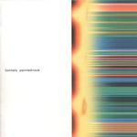

Home Artist links Label link

Tunnels - Painted Rock
| Artist: | Tunnels |
| Title: | Painted Rock |
| Label: | Bucky Ball Records BR005 |
| Length(s): | 64 minutes |
| Year(s) of release: | 1999 |
| Month of review: | [01/2003] |
Line up
Percy Jones - fretless bass
Marc Wagnon - midi vibes
Van Manakas - guitar
Frank Katz - drums
Tracks
| 1) | Painted Rock | 5.25
|
| 2) | Land Of The Hazmats | 5.23
|
| 3) | House Of Marc | 7.38
|
| 4) | Quai Des Brumes | 4.45
|
| 5) | Neuro-transmitter | 6.50
|
| 6) | Boyz In The Ud | 5.46
|
| 7) | Black Light | 6.56
|
| 8) | Bad American Dream 2001 | 10.39
|
| 9) | Lilly's Dolphin | 4.58
|
| 10) | Unity Gain | 5.40
|
Summary
Tunnels is the current band of former Brand X bass player Percy Jones, and is musically not all that unlike that predecessor. Compositionally Marc Wagnon is the most important member.
The music
As might not surprise one of a band with Percy Jones in it, Tunnels play an avant jazz style of music. However, they don't always do so in a Brand X kind of way. On a number of the tracks Wagnon's vibes (short for vibraphones) pretty much dominate, supported at times by some guitars, most notably in the first two tracks and penultimate. These tracks are mainly neurotic jazz stuff, not much to my liking. House Of Marc, despite its suggestive name, misses that dominance and approaches aformentioned Brand X style pretty closely, as do Quai Des Brumes and Neuro-transmitter. On these tracks the music is more balanced, giving each of the instrumentalists their share of room, and staying away from that uninteresting jazzy dominance. Boys In The Ud seems to incorporate some eastern influences, making for a nice result. Bad American Dream 2001, then again, starts sort of neurotic bass with keys, giving more room to other instruments later on, but without losing the neuroticness. The track has both good and bad moments. Rather profetic title, by the way.
Lilly's Dolphin returns the vibraphones, and closer Unity Again is mainly a drum solo. Interesting title for a solo.
Conclusion
I find that the track I like most on this album are those most similar to Brand X style. They show the most unity of the band and balance in the piece. The tracks dominated by one instrument tend to lose my interest pretty soon. Unfortunately this album contains more than its fair share of these kind of tracks. Therefore I can't quite give an equivocal thumbs for this one.
© Roberto Lambooy